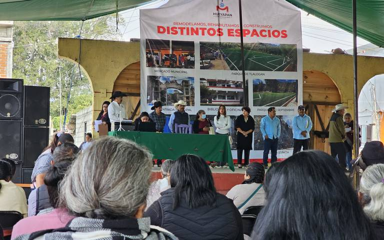

Mario Luna

La tarde del viernes 28 de febrero, el activista Cristino Castro Perea fue asesinado en la comunidad de Barra de la Cruz, en el municipio de Santiago Astata, Oaxaca.
.webp)
A través de redes sociales, el Alto Comisionado de la ONU llamó a las autoridades a realizar una investigación efectiva del caso.

El delegado de la Unión de Comunidades Indígenas de la Zona Norte del Istmo (Ucizoni) falleció en el ataque.

Marciano Montes Ortiz y dos integrantes de su cabildo son acusados del asesinato de una persona en San Juan Juquila Mixes en 2023.

David García Jiménez es acusado de homicidio en grado de tentativa contra dos personas en la región de la Sierra de Flores Magón.

Comunidades indígenas de las etnias tzotzil y tzeltal también exigieron justicia para el padre Marcelo Pérez a tres meses del asesinato.

Los funcionarios son acusados de al menos 16 homicidios, ocasionados por las disputas generadas por la entrega de tierras.

Claudia Sheinbaum, al igual que Ariadna Montiel y Edna Elena Vega, estuvieron presentes en un evento celebrado en el municipio de Urique en la Sierra Tarahumara.

Un informe del organismo detalla que en 13 años se iniciaron 156 expedientes sobre desplazados en Oaxaca, sobre todo en comunidades indígenas.

Emilia Ortiz García, hermana de las víctimas y defensora de los derechos humanos, explicó que sus hermanas venían de vender sus artesanías cuando fueron asesinadas.

La Coordinadora Contra la Represión y por la Justicia expresó que las constantes acciones violentas contra la región triqui rayan en la intención de un genocidio.

El entrenador Rigoberto Martínez Sandoval cobró fama hace algunos años cuando un equipo de niños triquis sorprendió al mundo por su técnica, habilidad y destreza para jugar descalzos.

Las hermanas Adriana y Virginia Ortiz García, de 35 y 45 años de edad, respectivamente, fueron atacadas por dos hombres armados cuando descendieron de un taxi.

Madre y hermanas denunciaron que han sufrido maltrato y violencia psicológica por parte de la fiscalía y que son víctimas de persecución e intimidación.

Familiares, amigos y grupos defensores de derechos humanos piden que la FGR investigue la desaparición de la activista mixe y su esposo, pues aseguran que las instituciones locales solo han entorpecido el caso.

Feligreses y comunidades indígenas de Los Altos de Chiapas dieron el último adiós al padre tsotsil que fue asesinado tras haber oficiado una misa el domingo pasado.

Antes de su desaparición, la joven había denunciado a un exfuncionario del INPI como presunto responsable de crear grupos de difusión de pornografía en WhatsApp.
.webp)
La fiscalía estatal intensificó y fortaleció los trabajos de búsqueda para la localización de Sandra Domínguez y Alexander Martínez a través de operativos simultáneos en la región de la Cuenca y Valles Centrales.

Estudiantes fueron testigos de los ataques armados que se prolongaron por más de cuatro horas.

Compañeros de Sandra Domínguez presentaron la solicitud de acción urgente ante la CIDH y están en espera de que se autorice el mecanismo.
.webp)
En la sesión no estuvieron presentes los diputados de oposición, por lo que solo Morena y sus aliados aprobaron la declaratoria de las reformas.

Ocho familias huyen de la violencia y sólo se llevaron lo que traían puesto; acusan que el Ejército no hace nada por prevenir los desplazamientos y atacar las causas.

Funcionarios de la Secretaría de Educación se niegan a atender el caso para garantizar el derecho a la educación del menor.

Corredores de Jornadas de Paz y Dignidad llegan a Tepeji del Río.
Consideran que es vital para asegurar la continuidad de las tradiciones y la identidad cultural en la sierra queretana.

Benigno Montero fungirá como vocero del municipio indígena el resto del año en sustitución de Guillermina Maya Rendón.
Durante el evento se presentaron los avances y resultados, donde destaca la expedición de la Ley de Derechos de los Pueblos y Comunidades Indígenas del Estado de Chihuahua.
El impacto es tal que actualmente no hay proyectos de exploración en los próximos 10 años.
El bloqueo carretero en Jacona - Los Reyes se mantiene luego de que este miércoles se registraran dos vehículos incendiados por comuneros de La Cantera en exigencia de la aparición con vida de sus compañeros.
Ariadna Ayala declaró que el conflicto está relacionado principalmente con cuestiones de la iglesia.
Los inconformes bloquearon las avenidas Félix Cuevas e Insurgentes, a la altura de donde se encuentran las instalaciones de la Profepa.
AMLO dio a conocer que ha instruido la formación de “un equipo” compuesto por varias dependencias del gobierno para asistir a los afectados.
Cientos aprovecharon la llegada de las fuerzas armadas para huir de Tila.